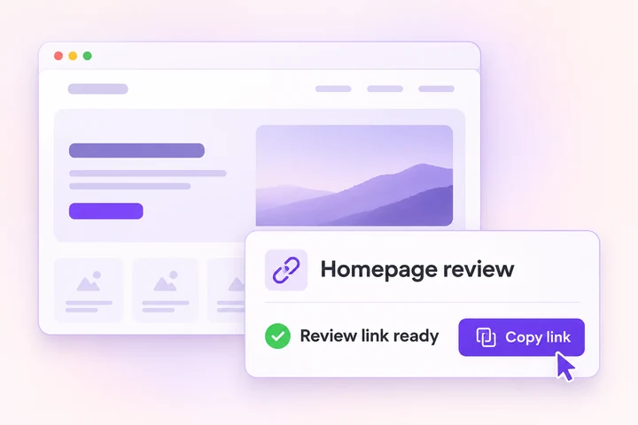
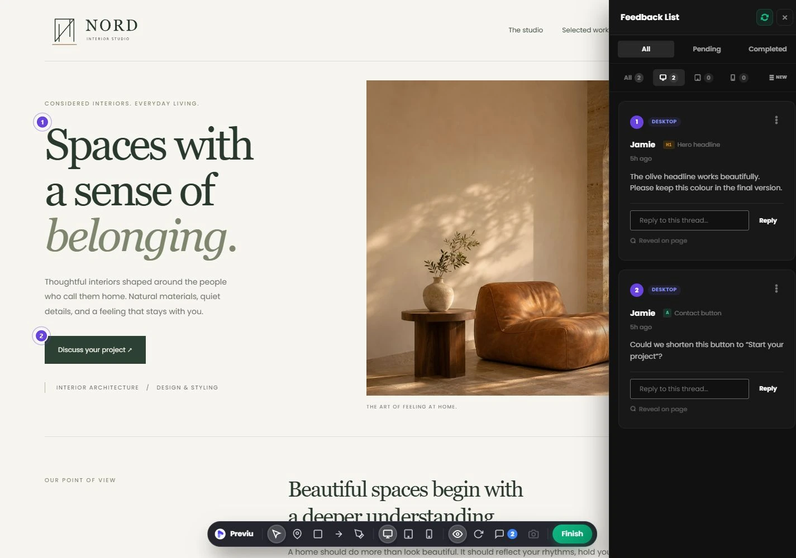
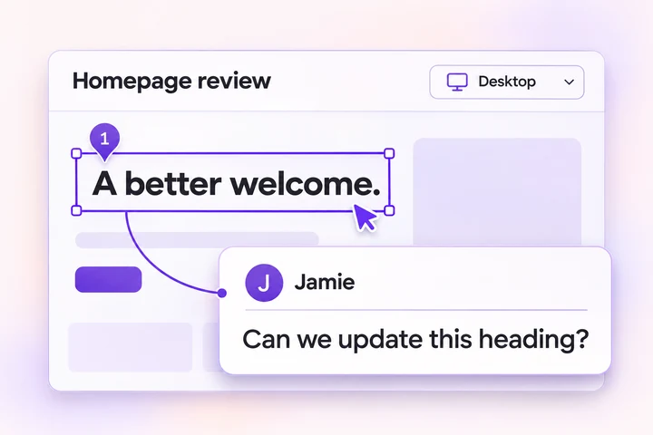
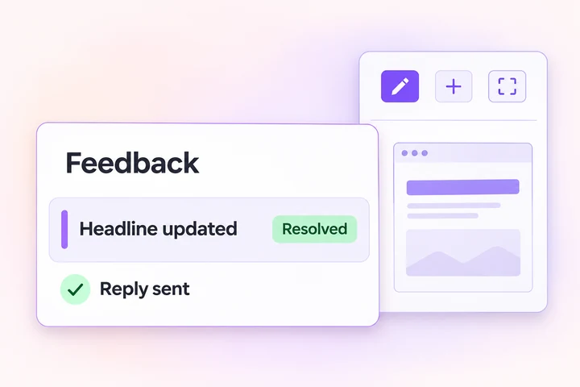
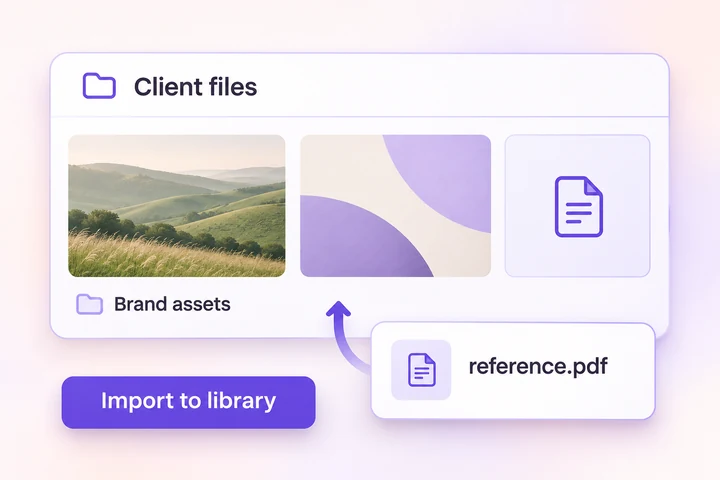
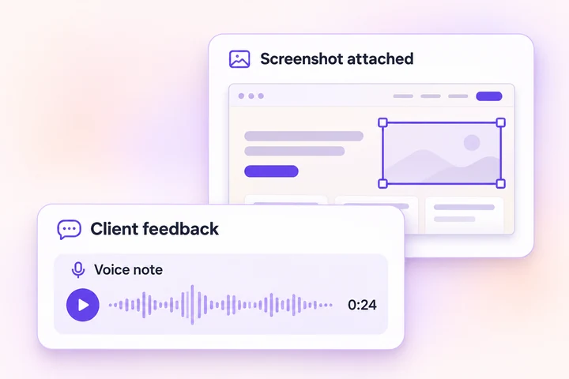
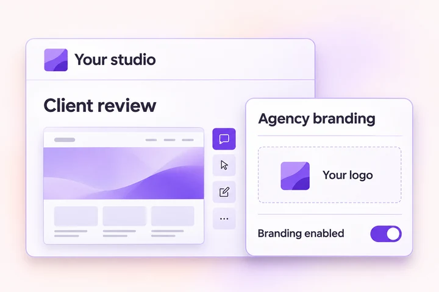

Send the page. Start the review.
Create a review session in WordPress and share its link. Your client enters their name and starts reviewing in their browser.
BUILT FOR WORDPRESS & ELEMENTOR
Share a link. Let clients point to what needs changing.
Then reply, edit, and resolve—with feedback beside your work.
✓ No client signup✓ Free core workflow✓ Your WordPress site

A SHORTER PATH FROM FEEDBACK TO FIXED
Keep the page, the request, and the discussion connected.
Workflow illustrations · Simplified interface examples

Create a review session in WordPress and share its link. Your client enters their name and starts reviewing in their browser.

Clients pin comments, draw arrows, outline areas, and add freehand annotations. Desktop, tablet, and mobile views give requests context.

Open Previu inside Elementor, read and reply to feedback, then mark it resolved. Manage sessions from the WordPress dashboard.
THE CONTEXT YOU WERE MISSING
From a quick text change to a detailed design review, keep the request close to the work.
Pins, rectangles, arrows, and freehand drawings turn vague requests into visual context. Threaded replies keep the discussion with each annotation.
Read feedback, reply, filter by device, and update its status from the editor panel. Manage review sessions in your WordPress dashboard.
Collect images, videos, PDFs, documents, and supported archives. Browse uploads in Previu and separately import selected files into the WordPress Media Library.

Browser voice notes help clients explain the nuance. The screenshot tool captures visual references to attach to feedback.

Add your agency name and logo, remove Previu branding from the client experience, and connect a Slack webhook for new-feedback notifications.

FROM THE WORDPRESS COMMUNITY
Read the review on WordPress.org ↗“The feedback is visible inside the Elementor editor, perfect, thank you”
START WITH THE WORKFLOW. ADD THE EXTRAS.
The core review workflow is free. Pro adds richer feedback and agency tools.
| What’s included | Previu Free | Previu + Pro |
|---|---|---|
| Shareable review links; no client signup | ✓ Included | ✓ Included |
| Pins, arrows, rectangles & freehand drawings | ✓ Included | ✓ Included |
| Desktop, tablet & mobile review views | ✓ Included | ✓ Included |
| Threaded replies & feedback statuses | ✓ Included | ✓ Included |
| Feedback panel inside Elementor | ✓ Included | ✓ Included |
| WordPress dashboard & email notifications | ✓ Included | ✓ Included |
| File attachments & browser voice notes | — | ✓ Included |
| Screenshot capture tool | — | ✓ Included |
| Previu media browser & WordPress library import | — | ✓ Included |
| Agency branding & logo controls | — | ✓ Included |
| Slack notifications via webhook | — | ✓ Included |
Pro is an add-on: keep Previu Free installed and active. Elementor is required for the editor integration.
CHOOSE YOUR SETUP
All paid tiers include the same Pro features.
Start collecting clearer feedback.
No paid license needed.
Download Free ↗For one active website.
Billed annually.
Get Single Site Pro ↗For a growing client roster.
Billed annually.
Get 5 Sites Pro ↗For agencies managing many sites.
Billed annually.
Get Unlimited Pro ↗Prices in USD. Taxes, billing terms, license scope, and final totals are shown at Freemius checkout. Annual plans are billed yearly; lifetime is a one-time purchase.
| License | Annual | Lifetime |
|---|---|---|
| Single Site | $79 / year ↗ | $149 one-time ↗ |
| 5 Sites | $129 / year ↗ | $249 one-time ↗ |
| Unlimited | $199 / year ↗ | $399 one-time ↗ |
THE PRACTICAL DETAILS
Previu is a WordPress plugin for visual website feedback, built around Elementor client reviews.
Explore the free plugin ↗GOOD QUESTIONS. CLEAR ANSWERS.
Have another question?
Visit the WordPress support forum ↗No. Send a review link and your client can open it in their browser, enter their name, and leave feedback. They do not need a WordPress account or browser extension.
Previu Free includes review sessions, visual pins and drawing tools, responsive review views, threaded replies, feedback statuses, the Elementor feedback panel, and the WordPress dashboard. Pro adds media, branding, and Slack features.
The integration uses Elementor’s editor; Elementor Pro is not listed as a requirement. You need WordPress 5.8 or later and PHP 7.4 or later. Try Previu Free with your theme and plugins before rolling it out to client sites.
No. Previu Pro is a separate add-on. Install and activate Previu Free first, then install Pro and activate its license.
Pro uploads are stored in Previu’s media folder on your WordPress host. Browse them in Previu and separately import selected files into the WordPress Media Library. Upload types and sizes depend on plugin settings and hosting limits.
Yes. The review interface includes desktop, tablet, and mobile viewport modes. Feedback records its device context, and the Elementor panel lets you filter feedback by device.
Voice notes need microphone permission, HTTPS (or localhost), and a browser that supports the recording format. Slack notifications need a configured incoming webhook. Both require Pro; email delivery depends on your WordPress mail setup.
With Pro, set an agency name and portal logo and use the branding controls to remove Previu branding from the client review experience.
Annual plans are billed yearly. The lifetime option is a one-time purchase. Every paid tier includes the same Pro features, with a choice of 1, 5, or unlimited sites. Check final license, updates, support, and purchase terms at checkout.
YOUR NEXT REVIEW CAN FEEL DIFFERENT.
Bring client feedback into the place you already build.
Get started with Previu Free ↗Explore Pro plans →